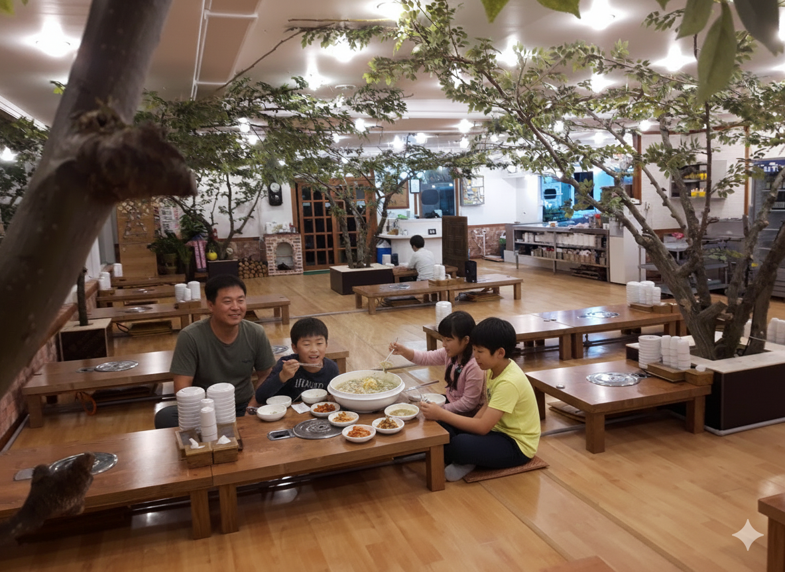
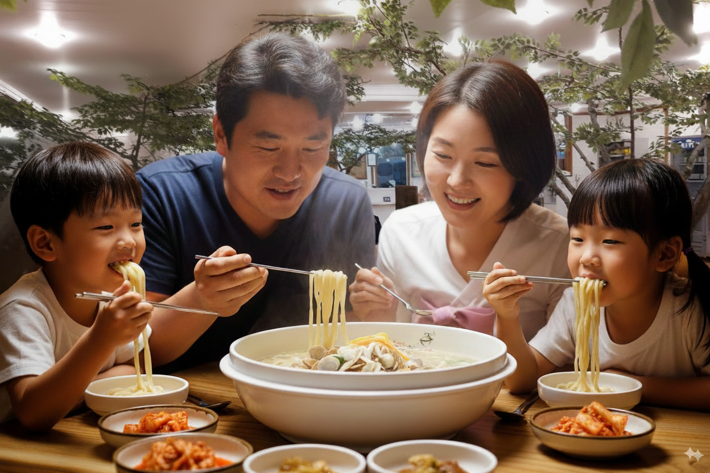
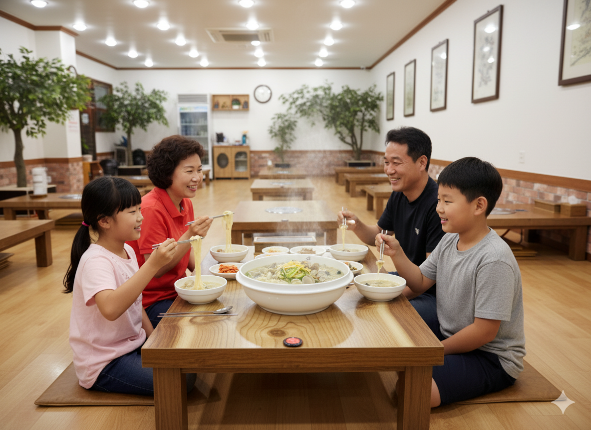

🎯 프롬프트 작성 순서
-
📷 실제 식당의 배경과 음식사진을 준비한다
가능한 한 고화질의 정면 사진을 준비하면 더 자연스러운 이미지를 생성할 수 있습니다.
-
📝 프롬프트 가이드에 맞춰 프롬프트를 작성한다
아래 제공되는 프롬프트 형식을 참고하여 세부 내용을 작성합니다.
-
🤖 Chat GPT, Gemini, Claude에 프롬프트를 입력한다
준비한 식당의 배경과 음식 사진을 함께 첨부하여 더 자세한 이미지 생성 프롬프트를 얻습니다.
-
🎨 얻은 프롬프트로 나노바나나에서 이미지를 생성한다
개선된 프롬프트와 사진들을 나노바나나에 입력하여 최종 이미지를 생성합니다.
⚠️ 작성 전 주의사항
- 식당의 배경사진은 정면 사진을 사용하면 더 자연스러운 이미지 생성이 가능합니다
- Google AI Studio(나노바나나)에 사진을 첨부할 때는 두 번째 사진의 비율로 생성되므로 첨부 순서에 유의해야 합니다
📋 프롬프트 가이드
🎯 기본 프롬프트 형식
| 요소 | 설명 |
|---|---|
| 주제 | 원하는 상황을 자세하게 설명 (사람, 행동, 음식 등) |
| 배경 및 환경 | 첨부한 사진의 식당 배경 |
| 매체 및 스타일 | 사실적 이미지 |
| 세부 묘사 | 원하는 화질, 화면 비율 (예: 1080P, 16:9) |
| 구도 및 앵글 | 원하는 구도와 앵글 (예: 정면, 측면, 버드아이뷰 등) |
| 조명 | 원하는 조명 (예: 채광, 식당의 조명 등) |
| 색상 및 분위기 | 원하는 색상 및 분위기 |
📝 예시 프롬프트
🔧 고정 프롬프트 템플릿
아래 템플릿의 내용을 채워 프롬프트를 완성하세요:
| 항목 | 내용 |
|---|---|
| 주제 | |
| 배경 및 환경 | |
| 매체 및 스타일 | 사실적 이미지 |
| 세부 묘사 및 특수효과 | |
| 구도 및 앵글 | |
| 조명 | |
| 색상 및 분위기 |
💡 참고 사항
- 주제, 배경 및 환경, 매체 및 스타일, 세부 묘사 및 특수효과, 구도 및 앵글, 조명, 색상 및 분위기를 작성할 때는 홈페이지의 참고자료 탭을 참고하는 것을 추천합니다
🤖 AI 프롬프트 작성 예시
✨ AI 프롬프트 결과
💬 Chat GPT
🇰🇷 한글 프롬프트
주제: 전통 한식당에서 한국인 가족 네 명이 따뜻한 바지락칼국수를 맛있게 먹고 있는 장면
배경 및 환경: 좌식형 테이블, 나무 인테리어, 천장 조명, 실내에 심어진 나무가 있는 공간
매체 및 스타일: 사실적인 사진 스타일, 고해상도 디지털 포토그래피
세부 묘사: 김이 모락모락 나는 칼국수, 그릇 옆의 김치 반찬, 4K 화질, 16:9 비율
구도 및 앵글: 가족을 중심으로 한 정면 구도, 약간 위에서 내려다보는 앵글
조명: 식당 내부의 따뜻한 백색 조명
색상 및 분위기: 따뜻하고 편안한 색감, 가족이 웃으며 식사하는 즐거운 분위기
🇺🇸 English Prompt
Subject: A Korean family of four enjoying warm clam kalguksu together in a traditional Korean restaurant
Background & Environment: Wooden floor, low tables for floor seating, indoor trees, warm ceiling lights
Medium & Style: Realistic photography style, high-resolution digital photo
Details & Effects: Steaming bowl of kalguksu, side dishes like kimchi, 4K quality, 16:9 aspect ratio
Composition & Angle: Frontal composition centered on the family, slightly top-down angle
Lighting: Warm indoor lighting creating a cozy and natural brightness
Color & Mood: Soft, warm color tones with a cheerful family dining atmosphere
🔷 Gemini
🇰🇷 한글 프롬프트
주제: 식당에서 행복하게 웃으며 바지락칼국수를 함께 먹고 있는 4명의 한국인 가족. 아이들은 젓가락으로 면을 집어 올리며 즐거워하고, 부모님은 따뜻한 국물을 맛보며 만족스러운 표정을 짓고 있는
배경 및 환경: 따뜻하고 아늑한 식당 내부. 나무 테이블과 은은한 조명, 벽에 걸린 아기자기한 장식품들이 어우러져 편안한 분위기
매체 및 스타일: 극사실주의적인 사진, 자연광을 활용한 영화 같은 장면
세부 묘사: 김이 모락모락 피어나는 바지락칼국수, 면발의 탱글함과 바지락의 신선함이 느껴지는 디테일, 4K 해상도, 시네마틱 와이드 스크린 (21:9 비율)
구도 및 앵글: 가족 구성원들의 얼굴이 모두 잘 보이는 로우 앵글에서 약간 측면으로 촬영된 클로즈업 샷
조명: 식당 내부의 따뜻한 오렌지색 조명과 테이블 위를 비추는 부드러운 스포트라이트
색상 및 분위기: 따뜻하고 활기찬 주황색과 노란색 톤, 가족의 사랑과 행복이 느껴지는 즐겁고 정겨운 분위기
🤖 Claude
🇰🇷 한글 프롬프트
주제: 4명의 한국인 가족이 낮은 나무 테이블에 둘러앉아 김이 모락모락 나는 바지락칼국수를 젓가락으로 들어올리며 행복하게 식사하는 모습
배경 및 환경: 실내에 살아있는 나무들이 자라고 있는 독특한 한국 전통 식당 인테리어, 낮은 좌식 테이블들이 배치된 넓은 나무 마루 바닥
매체 및 스타일: 자연스러운 조명의 고품질 사진, 실제 식당에서 촬영한 듯한 사실적이고 생동감 있는 이미지 스타일
세부 묘사: 테이블 위 큰 그릇에 담긴 바지락칼국수, 작은 접시에 담긴 김치, 가족 구성원들의 자연스러운 미소, 4K 고해상도, 16:9 화면 비율, 음식에서 올라오는 김(증기) 효과
구도 및 앵글: 테이블을 중심으로 가족 전체가 보이는 미디엄 풀샷, 약간 높은 각도(bird's eye view 30도)
조명: 식당의 자연스러운 천장 조명과 간접 조명, 따뜻한 색온도(3000-3500K)
색상 및 분위기: 따뜻한 나무색 톤과 흰색이 조화를 이루는 아늑한 색감, 한국 가정식의 편안함과 온기가 느껴지는
🎨 나노바나나 프롬프트 작성 예시
💡 추가 팁
- 프롬프트에 나와있는 반영사항 중 추가로 요청할 경우 DeepL을 이용하여 영어로 번역하여 내용을 추가하면 됩니다
- Chat GPT, Gemini, Claude의 프롬프트는 화질 설정이 4K 고화질이기 때문에 화질은 1080P로 변경해도 상관없습니다
🖼️ 생성형 AI 프롬프트 결과물
📌 결과 이미지 예시
위의 프롬프트들을 나노바나나에 적용하여 생성된 이미지들입니다. 각 AI 모델(Chat GPT, Gemini, Claude)의 프롬프트로 생성한 결과가 조금씩 다른 스타일과 분위기를 보여줍니다.
💬 Chat GPT 결과
따뜻하고 자연스러운 가족 분위기가 잘 표현된 이미지
🔷 Gemini 결과
생동감 있고 디테일이 살아있는 극사실주의 이미지
🤖 Claude 결과
편안하고 아늑한 한국 전통 식당의 분위기가 강조된 이미지